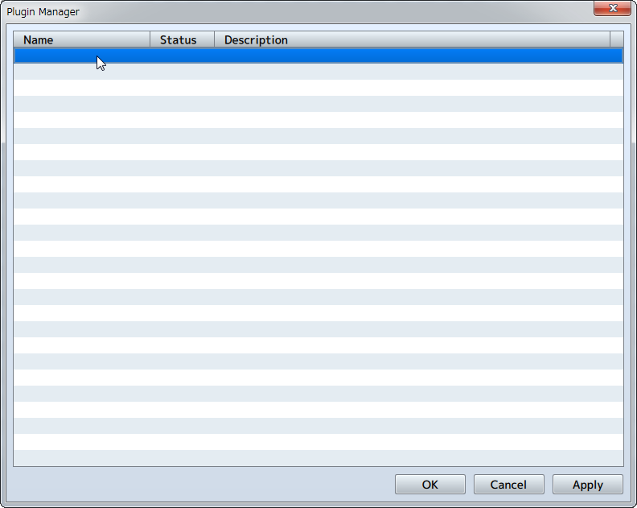
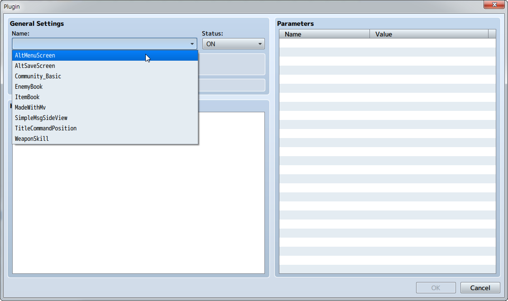
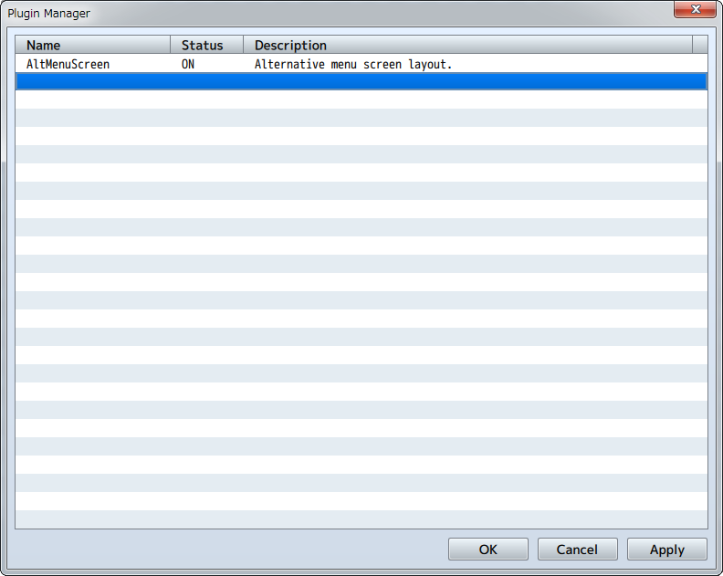
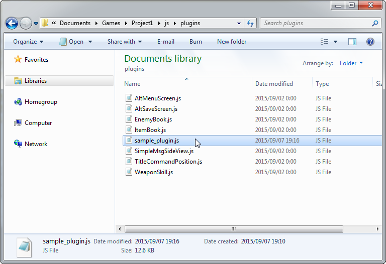
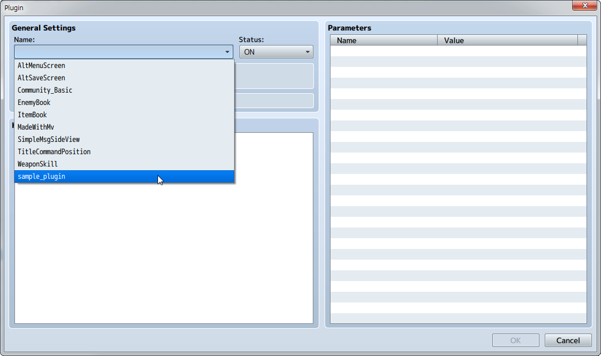
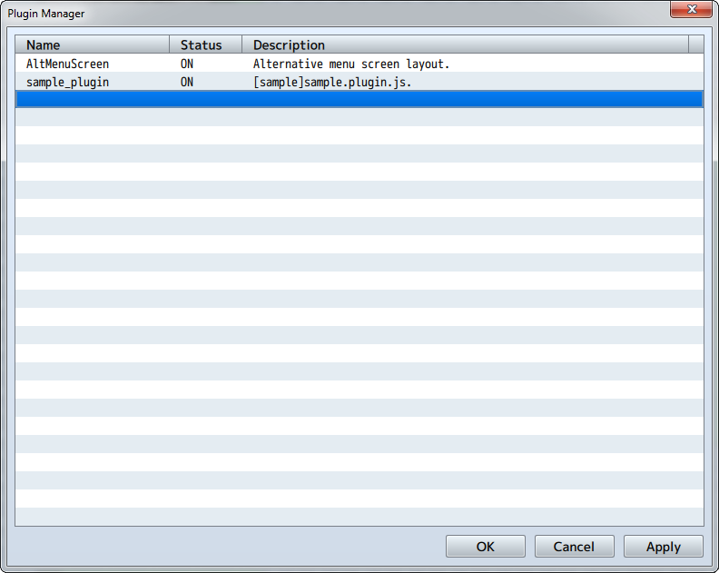
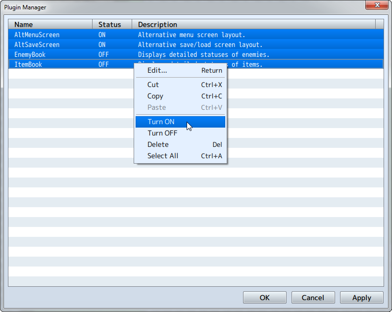

启用插件
用户可以找到更容易使用的RPG Maker MV插件功能。
启用插件
使用[Plugin Manager][插件管理器]里找到的[Tools][工具]来开启插件。
-
双击空行。
 -
选择您想要使用的插件，然后单击 [OK] 按钮。
 -
选定的插件将出现在列表中。

启用非官方的插件
每添加一个新的插件，需要将该插件的JS文件复制到项目路径的 "js/plugins" 文件夹中，然后使用上述方式启用它。
-
复制所需插件的js文件到项目路径的 "js/plugins" 文件夹中
 -
双击插件管理器中的空行，并点击[Name][名称]里出现的该插件名称。选择名称，然后单击[OK]。
 -
选定的插件将出现在列表中。

一次性更改多个 [Statuses][状态]
按住 Shift 键选中多个插件，右键一次性改变全部状态
